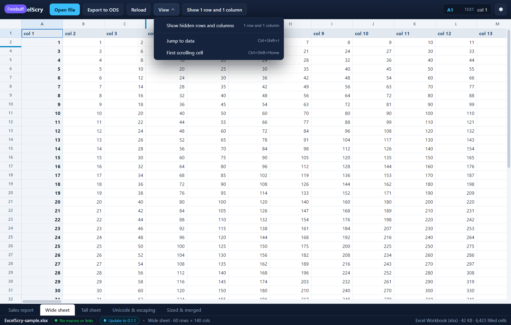

<!doctype html>
<meta charset="utf-8">
<title>ExcelScry — the switches that decide what the grid shows</title>
<style>
  body { margin: 0; background: #1b1d22; color: #c9cdd6;
         font: 14px/1.5 Segoe UI, system-ui, sans-serif; }
  figure { margin: 0; }
  img { display: block; width: 100%; height: auto; }
  figcaption { padding: 12px 16px; }
  code { color: #8fd3ff; }
</style>
<figure>
  
  <figcaption>
    The grid's view switches live in one place. <strong>View</strong> opens a
    menu whose first entry says what the sheet hides and how much of it —
    <code>1 row and 1 column</code> here — with a tick when those rows and
    columns are being shown; the toolbar keeps its one-click button for the same
    switch, so the common case does not need the menu. <strong>Jump to
    data</strong> (<code>Ctrl+Shift+J</code>) selects the corner of the data and
    puts it at the top-left of the view rather than merely somewhere on screen:
    a report that begins at <code>C6</code> behind a title and an empty margin
    opens onto <code>C6</code>, and a delimited file opens onto its first
    record rather than onto the names pinned above it. <strong>First scrolling
    cell</strong> (<code>Ctrl+Shift+Home</code>) goes to the cell where the part
    of the sheet that moves begins — <code>B2</code> on this sheet, whose first
    row and column are frozen — so a jump never lands under the band it was
    scrolled behind; on a text table it goes below the pinned header. An action
    that cannot be taken says why rather than disappearing: a sheet that hides
    nothing shows <code>none</code>, one that freezes nothing explains that the
    whole grid scrolls. The menu is a keyboard surface too — it opens onto its
    first action, the arrow keys walk it, <code>Esc</code> closes it and hands
    the focus back to the button, and a click anywhere else dismisses it. What
    the menu changes is the view: the file is never written, and a hidden row
    shown here is still hidden in the sheet. (Shown in the UI harness, whose
    <em>Wide sheet</em> freezes its first row and column and hides one row and
    one column of its own.)
  </figcaption>
</figure>
